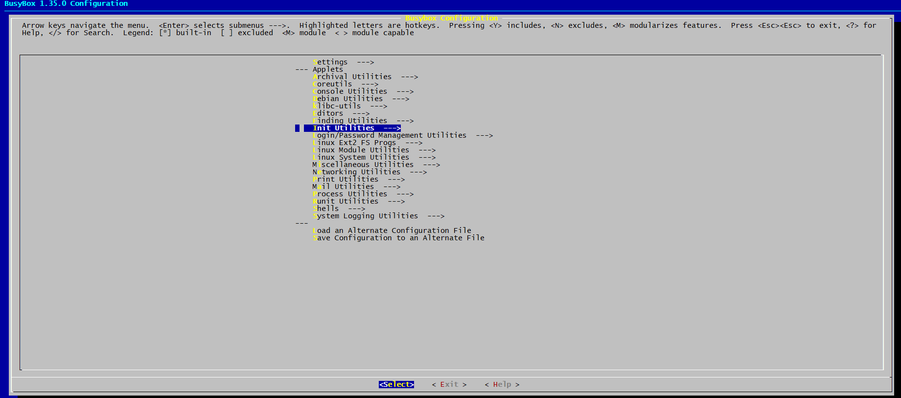
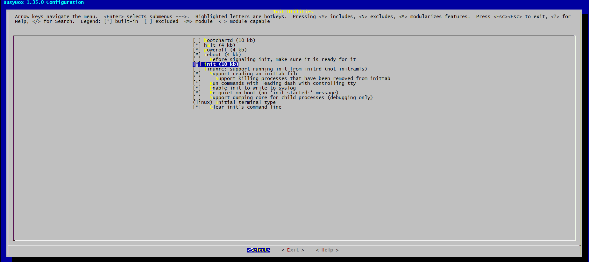
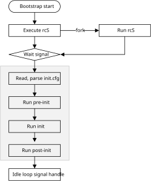

Overview
Realtek Linux SDK implements a bootstrap module, providing entry identifiers for starting services and features, to customize the user space process boot order. There are two ways to start the init applications.
Busybox init - the init application is compiled in busybox.
Base init - the init application is compiled in SDK.
Busybox Init
Bootstrap Run Flow
Bootstrap module is the first process started by the Linux kernel. In this configuration, init is a symbolic link to /bin/busybox. Init will execute out the following main tasks in order:
Setup signal handle
Initialize the console and environs
Parse the config file which path is
/etc/inittab, saved them to the action listRun the actions by different run levels
Loop to check the respawn and askfirst level task, try to restart them
Busybox Configuration
To enable init in busybox, type command in Yocto SDK:
bitbake busybox -c menuconfig
{kind=link}

{kind=link}

Base Init
Bootstrap Run Flow
Bootstrap module is the first process started by the Linux kernel. After started, it will run Linux script (rcS), then read and parse the init configuration file and run with three stages: pre-init, init and post-init jobs. In each stage, it will execute the actions indicated by the configuration file. While all these done, the bootstrap module will switch to idle status and wait to handle system’s signals. The flow is shown in the following figure.
{kind=link}

Init Configuration File Structure
The init configuration file is a JSON structure file and locates in <sdk>/sources/fwk/device/nuwa/full/init.cfg. The basic structure is shown below:
{
"jobs" : [{
"name" : "pre-init",
"cmds" : [
"chmod 0777 /dev/binder"
]
}, {
"name" : "init",
"cmds" : [
"mkdir /dev/input"
]
}, {
"name" : "post-init",
"cmds" : [
"start shell"
]
}
],
"services" : [{
"name" : "shell",
"path" : ["/bin/sh"],
"uid" : 0,
"gid" : 2000,
"once" : 0,
"console" : 1,
"importance" : 1,
"caps" : [0, 1]
}
]
}
The configuration file has two parts:
jobs: mean the job that the bootstrap module will execute.
services: list all the services information that the bootstrap module will use.
Init Configuration - jobs
Init Configuration’s jobs part has three different types: pre-init, init and post-init. The bootstrap module will execute pre-init cmds list first, then init cmds list and last post-init cmds list. For each types, cmds has the same structure. It means that you can put any commands in any list. For more details, refer to How to Customize Init Configuration Files.
Init Configuration - services
Init Configuration’s services part defines the basic attribution for the service daemons, including name, path, uid, gid, once, console, importance, and caps. The attribute list is shown in the following table.
Attribute |
Introduction |
|---|---|
name |
Service name, jobs use this value to define the process. |
path |
Directory for storing executable files. |
uid |
Define the service user identify. |
gid |
Define the service group identify. |
once |
Whether restart the service after it crash. |
console |
Whether the service can output message to console. |
importance |
Whether the init process should reset the system after the service exit. |
caps |
The service capability information. If set to 0xFFFFFFFF, it means full capability. |
How to Customize Init Configuration Files
Add Service Daemon
To add a service daemon to the bootstrap process, two information needs to be provided in the configuration files.
Basic attribute of the daemon
Command to execute
For example, we want to add adbd process as a service and start it by bootstrap module.
Add adbd daemon’s information.
{ "name" : "adbd", "path" : ["/bin/adbd"], "uid" : 0, "gid" : 2000, "once" : 0, "console" : 0, "importance" : 0, "caps" : [0, 1] }
Setting the console attribute to 0 means that adbd does not output any message to the console.
Add a command to execute in jobs section. Use the start command to tell bootstrap module to start the adbd process in post-init stage.
{ "name" : "post-init", "cmds" : [ "start shell", "start adbd" ] }
Add Commands
The bootstrap module supports commands in the following table.
Command type |
Introduction |
|---|---|
start |
Start a service. |
mkdir |
Create a directory. |
chmod |
Change file’s mode attribute. |
chown |
Change file’s owner attribute. |
mount |
Mount a disk. |
insmod |
Install a kernel module. |
start Command
The command start is used to start a service.
mkdir Command
The command mkdir is used to create a directory. But it does not accept parameters, meaning that if you want to make a multi-level directory, you should run mkdir command multiple times.
For example: to create a directory /dev/test1/test2, add commands as below:
mkdir /dev
mkdir /dev/test1
mkdir /dev/test1/test2
chmod Command
The command chmod is used to change file’s mode attribute.
Format: chmod mode file
mode: 0xxx, file mode info
file: file or directory path
For example:
chmod 0755 /tmp
chmod 0755 /tmp/xxx
chown Command
The command chown is used to change file’s owner attribute.
Format: chown owner group file
owner/group: owner info
file: file or directory path
For example:
chown 0 2000 /tmp
mount Command
The command mount is used to mount a file system.
Format: mount fs_type source target flag1 flag2 … data
fs_type: the type of the image which you want
source: the image to mount
target: the mount destination
flag: the parameters for mount
For example:
mount tmpfs tmpfs /tmp size=20M
insmod Command
The command insmod is used to insert kernel module. It allows to insert a kernel module in bootstrap process.
Format: insmod <ko> [-f] [options]